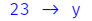

Using Fira Code Ligatures in RStudio
What are Ligature Fonts?
To quote the Fira Code README:
Problem
Programmers use a lot of symbols, often encoded with several characters. For the human brain, sequences like
->,<=or:=are single logical tokens, even if they take two or three characters on the screen. Your eye spends a non-zero amount of energy to scan, parse and join multiple characters into a single logical one. Ideally, all programming languages should be designed with full-fledged Unicode symbols for operators, but that’s not the case yet.Solution
Fira Code is a free monospaced font containing ligatures for common programming multi-character combinations. This is just a font rendering feature: underlying code remains ASCII-compatible. This helps to read and understand code faster. For some frequent sequences like
..or//, ligatures allow us to correct spacing.
Step 1: Install the Fira Code Font Family
Windows
- Go to https://github.com/tonsky/FiraCode/releases/latest
- Download the
Fira_Code_vX.X.zipfile - Extract all the zipped files to a folder on your computer
- Open the extracted folder and open the
ttfsubfolder - Highlight all files in the
tffsubfolder - Right-click on one of these highlighted files to open the context menu
- Select “Install” from the context menu
{kind=link}
MacOS
- Follow the same instructions 1(a) to 1(f) from Windows
- Select “Open” or “Open with Font Book” from the context menu
- Select “Install Font”
Linux
Step 2: Change the RStudio Editor Font
In RStudio, open the “Tools” menu and select “Global Options…”
Select the “Appearance” tab and change the “Editor Font” to
Fira Code.Click the “OK” button.
{kind=link}
Step 3: Using Ligatures in RStudio
Now, certain character combinations will automatically be transformed into beautiful ligatures as you type them. The best part is that, although the ligatures may appear to be one character, they are still represented in your files as the individual characters and thus can still be edited without problem.
{kind=link}
Here are some of my favorite Fira Code ligatures for R.
Assignment operators
x <- 10 becomes
23 -> y becomes 
Relational operators
x <= y becomes
x >= y becomes
x == y becomes
x != y becomes
Native pipe operator
x |> sqrt() becomes